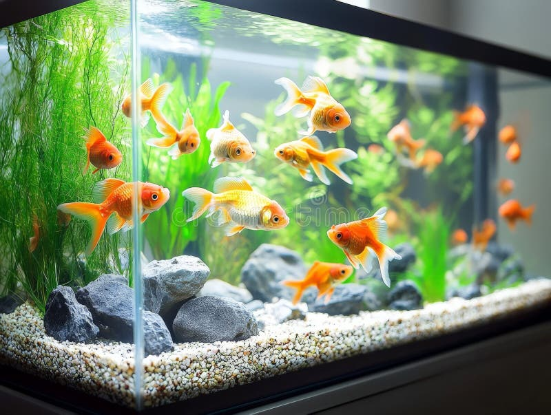
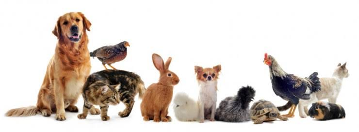

!Bienvenido! Ah Mi App
EN ESTA APP TE MOSTRARE ALGUNAS DE LAS MASCOTAS QUE QUISIERAN DE TU COMPAÑIA🫶🏽.
MASCOTAS MAS POPULARES
Perros

Los perros son el amigo mas fiel de los seres humanos,y con los cuales simempre es recomendable tener uno.Hay más de 340 razas reconocidas, cada una con características únicas.Necesitan ejercicio diario y entrenamiento para ser buenos compañeros.
Gatos

Son curiosos y independientes, pero también muy afectuosos.Duermen mucho pueden pasar hasta 16 horas al día durmiendo. Son fáciles de cuidar, son recomendable para esas personas que tienen ocupados sus horarios.
Peces

Son animales acuáticos que pueden ser muy relajantes y fáciles de cuidar.Solo necesitan un acuario limpio y bien cuidado para sobrevivir, es muy bonito tener uno en vivienda.
Información acerca de nuestras Mascotas

Tipos de Mascotas: Perros, gatos, peces, aves, etc.
Nos ayudan fomentar la responsabilidad, el amor y el cuidado por los animales.
Tendencia actual: Las mascotas son consideradas parte de la familia y se les da un trato especial.